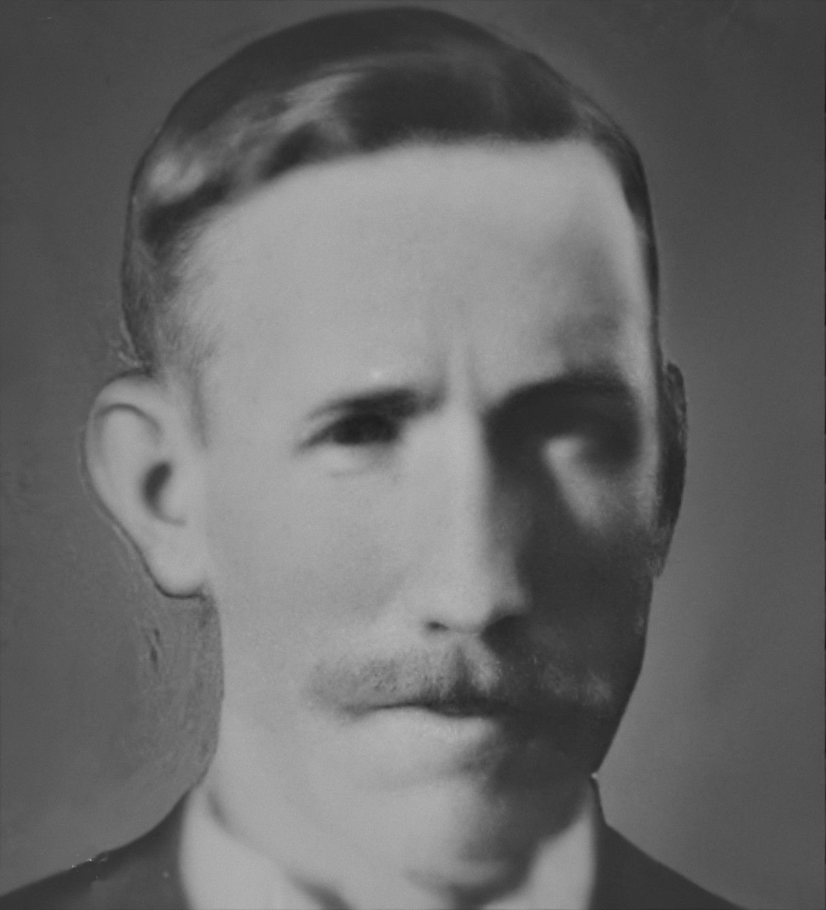
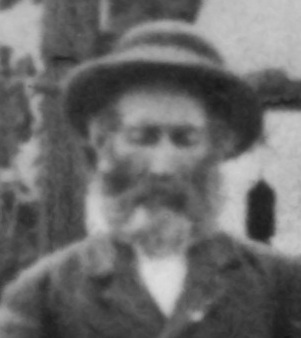
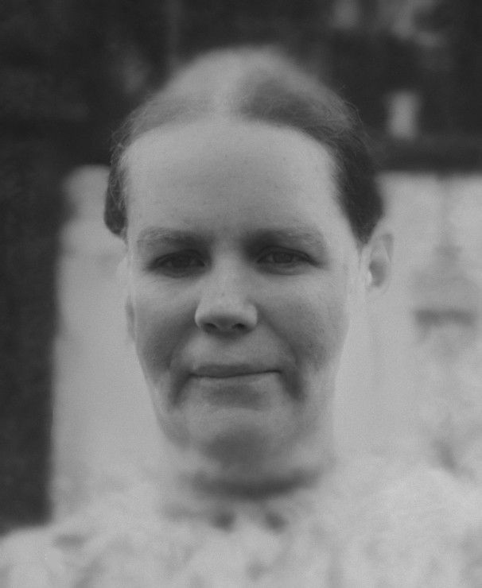
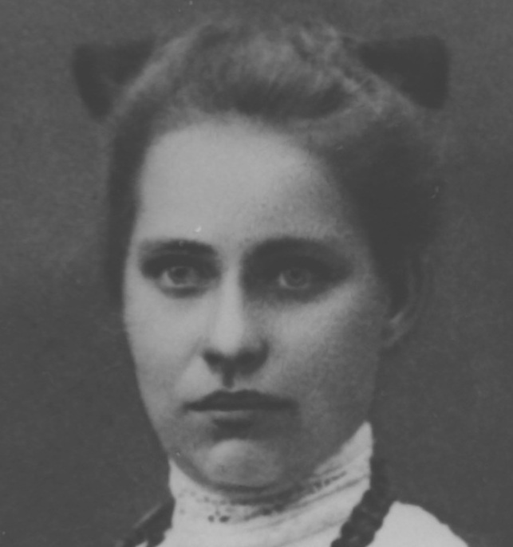
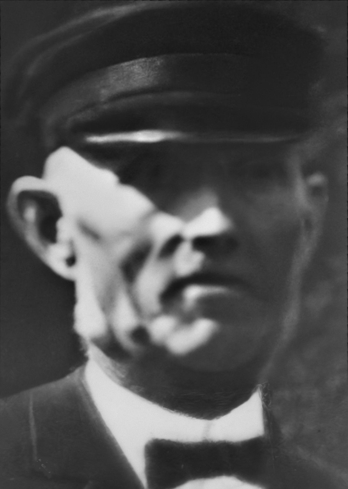
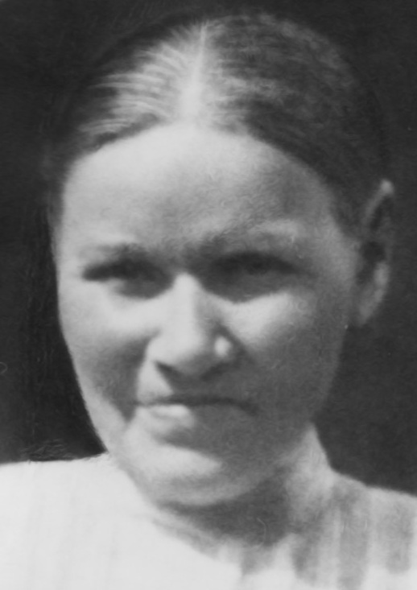

Född 20 dec 1920 i Mariehov, Drothem (E) 1 .
Död 19 jan 2011 på björngatan 18, Gård 6, Kv Länken, Jönköping, Jönköpings Sofia-Järstorp (F) 2 .

F Gustav Georg Karlsson.
Född 21 jul 1889 i Wartenburg / Vattenborg, Häggebo, Ringarum (E) 3 .
Död 21 jan 1972 på Lidabergsgatan 29, Gård 19, Kv Blåhuvan, Smedby, Norrköping, Norrköpings Sankt Johannes (E) 2 .

FF Klas Ferdinand Karlsson.
Född 19 jun 1859 i Holmtebo, Ringarum (E) 4 .
Död 31 jan 1945 i Lunds jägmästaregård, Lund, Drothem (E) 2 .
FFF Karl Magnus Andersson.
Född 19 maj 1817 i Holmtebo, Ringarum (E) 5 .
Död 1 nov 1897 i Stensberg, Holmtebo, Ringarum (E) 6 .
FFM Karolina Wilhelmina Östensdotter.
Född 18 mar 1834 i Stockebäck, Tryserum (E) 7 .
Död 13 apr 1893 i Stensberg, Holmtebo, Ringarum (E) 8 .

FM Hilda Sofia Karlsdotter.
Född 2 feb 1867 i Borrdalen, Fredriksnäs, Gryt (E) 9 .
Död 28 okt 1934 i Lunds jägmästaregård, Lund, Drothem (E) 2 .
FMF Karl Peter Karlsson.
Född 27 feb 1837 i Käggla/Kägglö, Tryserum (E) 10 .
Död 23 feb 1904 i Hästhagen, Spolstad, Gårdeby (E) 11 .
FMM Anna Sofia Svensdotter.
Född 21 apr 1848 i Björklund, Rullerum, Ringarum (E) 12 .
Död 8 jul 1932 i Hagsätter, Halleby, Skärkind (E) 13 .

M Elvira Katarina Karlsson f Bengtsson.
Född 30 mar 1888 i Fyrby 2 Kronogård, Fyrby, Norrköpings Östra Eneby (E) 14 .
Död 28 okt 1980 på Lidabergsgatan 29, Gård 19, Kv Blåhuvan, Smedby, Norrköping, Norrköpings Sankt Johannes (E) 2 .

MF Johan Fredrik Bengtsson.
Född 17 jan 1843 i Sixtorp/Stigantorp, Drothem (E) 15 .
Död 12 nov 1922 i Sandtorp, Hälla Lillgård, Hälla, Mogata (E) 16 .
MFF Bengt Bengtsson.
Född 24 okt 1807 i Stupekulla/Stubbekulla, Ekhult, Rönö (E) 17 .
Död 23 maj 1863 i Ängstorpet, Lissleäng, Häradshammar (E) 18 .
MFM Anna Kajsa Nilsdotter.
Född 18 nov 1805 i Lagmansdahl, Vinö, Lofta (H) 19 .
Död 14 dec 1866 i Settersberg, Oxtorp, Tåby (E) 20 .

MM Johanna Karolina Andersdotter.
Född 27 mar 1851 i Sandtorp, Hälla Lillgård, Hälla, Mogata (E) 21 .
Död 12 sep 1918 i Sandtorp, Hälla Lillgård, Hälla, Mogata (E) 22 .
MMF Anders Fredrik Andersson.
Född 17 nov 1810 i Runnbäcken båtsmanstorp 186, Hälla Storgård, Hälla, Mogata (E) 23 .
Död 9 apr 1895 i Sandtorp, Hälla Lillgård, Hälla, Mogata (E) 24 .
MMM Stina Kajsa Matsdotter Sjögren.
Född 23 jul 1815 i Mossbo/Måsebo, Dyhult, Mogata (E) 25 .
Död 25 dec 1899 i Sandtorp, Hälla Lillgård, Hälla, Mogata (E) 26 .